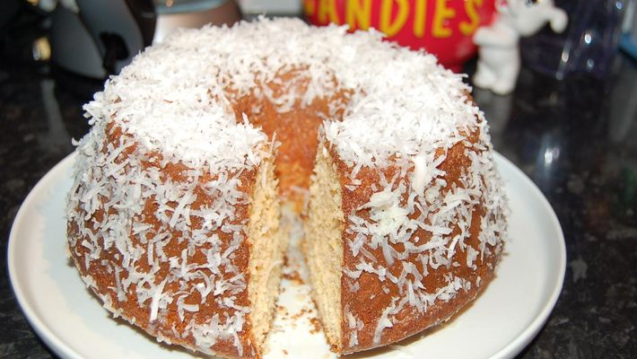

Home
Bolo de Laranja
Para saber mais sobre o chefe, clique aqui!

Laranja e Bolo... gosta das duas coisas? Que tal juntar os dois? Segue uma receide de bolo de laranja bem especial.
Descrição
Rendimento: 12 pedaços
tempo de preparo: 60 minutos
Nível de dificuldade: Facil
Ingredientes
- 2 xícaras de farinha de trigo
- 2 xícaras de açucar
- 1 xícara de suco de laranja ou refrigerante de laranja
- 4 ovos
- 1 colher de fermente em pó
Modo de Preparo
- Bata as claras em neve, misture as gemas e o açúcar e torne a bater
- Depois, misture a farinha e o suco de laranja
- Por último acrescente o fermento
- Leve ao forno para assar em forma untada e polvilhada por cerca de 40 minutos em 180°C (dependendo do forno)
Acompanhe o passo-a-passo!
Home